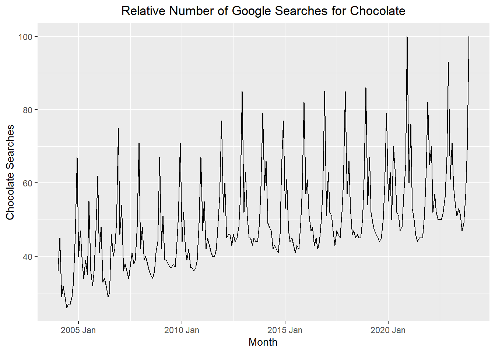
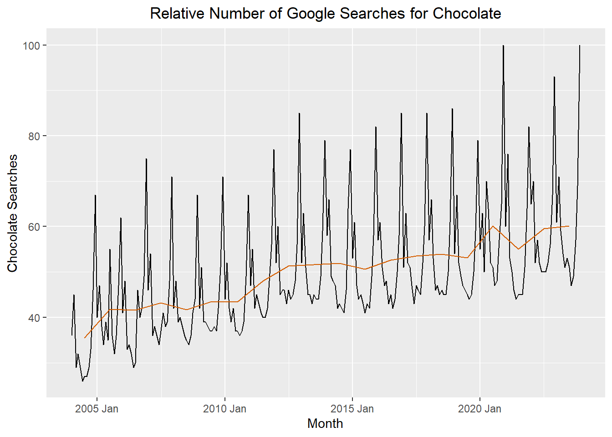
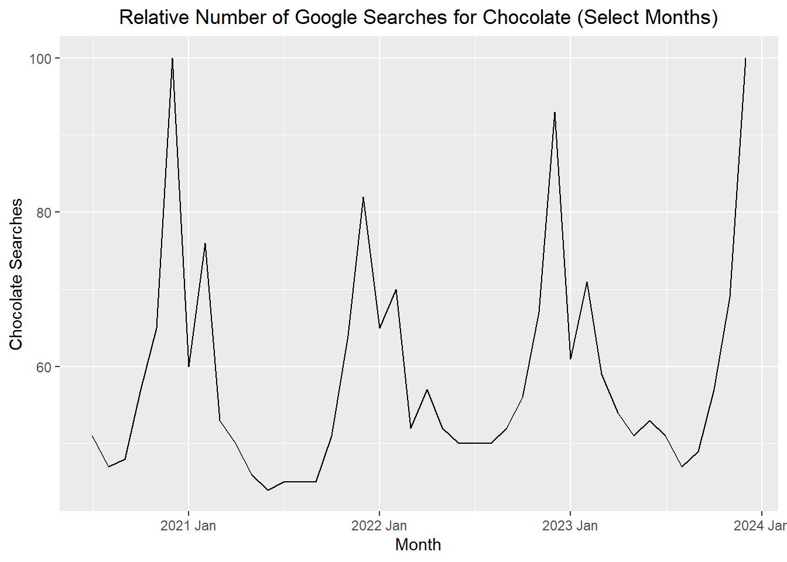

Category: All categories
Month chocolate: (United States)
2004-01 36
2004-02 45
2004-03 29
2004-04 32
2004-05 29
2004-06 26
2004-07 27
2004-08 27
2004-09 29
2004-10 33
2004-11 46
2004-12 67
2005-01 40
⋮ ⋮
2023-10 57
2023-11 69
2023-12 100Chapter 1: Lesson 1
Course Introduction
Learning Outcomes
Introduce the course structure and syllabus
- Get to know each other
- Describe key concepts in time series analysis
- Explore an example time series interactivelyIntroduction to the course structure and Canvas (30 min)
- Introduction of teacher(s)
- Introduction of students
- Syllabus
- Software: R and RStudio
- Textbook
- Cowpertwait, P. S. P., & Metcalfe, A. V. (2009). Introductory Time Series with R. Springer. ISBN 978-0-387-88697-8; e-ISBN 978-0-387-88698-5; DOI 10.1007/978-0-387-88698-5.
- Supplement to the Textbook
- Modern R code
- Time Series (TS) Notebook for in-class activities
- Lesson cadence
- Read assigned section(s) from the textbook
- Assigned sections listed in the TS notebook
- Reading Journals
- Record your learning
- Include all of the following from the assigned reading: vocabulary terms, nomenclature, models, important concepts, and your questions
- Review another student’s learning journal at the beginning of class
- In-class Activities
- Homework
- Read assigned section(s) from the textbook
- Assessment Structure
- Daily Homework, Multi-week Projects, Three Exams
- Grading Categories
- Attendance / Participation (5%)
- Reading Journal (10%)
- Homework (35%)
- Projects (20%)
- Exams (30%)
- Grades: 93% = A
- Calendar
- Team structure for class activities
- Random assignment, frequent changes, partner with each student in the class
- We are all in this together
Class Activity: Google Trends (Searches for “Chocolate”) (10 mins)
Google Trends allows you to download a time series showing the proportional number of searches for a given term. The month with the highest number of searches has a value of 100. The values for the other months are given as a percentage of the peak month’s value. The following table illustrates the data, as given by Google Trends.
The cleaned version of the data used for this demonstration are available in the file chocolate.csv.
In Lesson 3, we will practice converting data like this into a time series (tsibble) object.
Show the code
if (!require("pacman")) install.packages("pacman")
pacman::p_load("tsibble", "fable",
"feasts", "tsibbledata",
"fable.prophet", "tidyverse",
"patchwork", "rio")
# read in the data from a csv and make the tsibble
# change the line below to include your file path
chocolate_month <- rio::import("../data/chocolate.csv")
start_date <- lubridate::ymd("2004-01-01")
date_seq <- seq(start_date,
start_date + months(nrow(chocolate_month)-1),
by = "1 months")
chocolate_tibble <- tibble(
dates = date_seq,
year = lubridate::year(date_seq),
month = lubridate::month(date_seq),
value = pull(chocolate_month, chocolate)
)
chocolate_month_ts <- chocolate_tibble |>
mutate(index = tsibble::yearmonth(dates)) |>
as_tsibble(index = index)
chocolate_month_ts |> head()# A tsibble: 6 x 5 [1M]
dates year month value index
<date> <dbl> <dbl> <int> <mth>
1 2004-01-01 2004 1 36 2004 Jan
2 2004-02-01 2004 2 45 2004 Feb
3 2004-03-01 2004 3 29 2004 Mar
4 2004-04-01 2004 4 32 2004 Apr
5 2004-05-01 2004 5 29 2004 May
6 2004-06-01 2004 6 26 2004 JunFor now, we will use the tsibble object (which in this case is called chocolate_month_ts) to explore the time series. Here is a plot of the time series representing the proportional frequency of searches for the term “chocolate.”
Show the code
autoplot(chocolate_month_ts, .vars = value) +
labs(
x = "Month",
y = "Chocolate Searches",
title = "Relative Number of Google Searches for Chocolate"
) +
theme(plot.title = element_text(hjust = 0.5))
- What do you notice about this plot?
The red line represents the mean for each year. The point for this line was positioned to align with July of the year.
Joining with `by = join_by(year)`
- What do you observe about the number of searches for “chocolate” each month?
- What might be causing this trend?
Consider the data for the last few years:

- Which month tends to have the greatest number of Google searches for “chocolate”?
- Which month has the second greatest number of Google searches for “chocolate”?
- When do the fewest number of Google searches for “chocolate” occur?
- How can you explain these observations?
Autocorrelation is a fancy word that means that individual values in a sequence of data are related in some way.
Consider searches in successive months. Are they independent?

- Think about what you know about the reported number of searches in December compared to the following February. The reported number of searches for “Chocolate” in December 2022 is 93. Does it make sense that the reported number of searches in February 2023 is 71? Given the value from December, is the value in the following Febrary independent and completely random?
- The value reported by Google for June 2023 is 53. Based on what you have observed in the data, do you think the value for July 2023 will be close to or far from this value? Justify your answer.
Discuss these vocabulary terms in the context of the Google Trends (“Chocolate”) example: - Time series - Sampling interval - Autocorrelation (or serial dependence) - Trend - Seasonal variation - Cycle - Deterministic vs. Stochastic
Class Activity: S&P 500 (10 mins)
The time series plot below illustrates the daily closing prices of the standard and Poor’s 500 stock index (S&P 500).
Joining with `by = join_by(year)`
The red line represents the mean for each year. The point for this line was positioned to align with July of the year.
Joining with `by = join_by(year)`
`geom_smooth()` using formula = 'y ~ x'
- What do you observe about the value of the S&P 500 over time?
- What might be causing this trend?
- Are there regularly-occurring seasonal trends in the data?
- Are there some random (stochastic) business cycles observable in the data?
- How can you explain these observations?
- Consider closing prices in successive days. Are they independent?
- Why would there be autocorrelation in the data?
Discuss these vocabulary terms in the context of the S&P 500 example: - Time series - Sampling interval - Autocorrelation (or serial dependence) - Trend - Seasonal variation - Cycle - Deterministic vs. Stochastic
Recap (10 mins)
- What is time series data?
- Define “time series” (e.g. observations collected sequentially over time)
- Examples of time series data
- Why ordinary regression fails – correlated error terms
- Examples of time series from different domains:
- Daily credit card balance
- Daily closing stock prices
- Monthly sales figures
- Yearly global temperature measurements
- Secondly wave heights in an ocean buoy
- Weekly unemployment rates
- Quarterly GDP estimates
- Importance of context and subject matter knowledge
- Role of models (explanation, prediction, simulation)
- Are there any questions on the course or time series data?
Preparation for the next class meeting
- Update R and RStudio
- Access
- Canvas course
- Time Series Notebook (Quarto file)
- Purchase the textbook
- Read sections 1.1-1.4 and 1.5.1-1.5.3 in the textbook
- Obtain a Learning Journal
- Prepare to share your Learning Journal with another student in the next class meeting